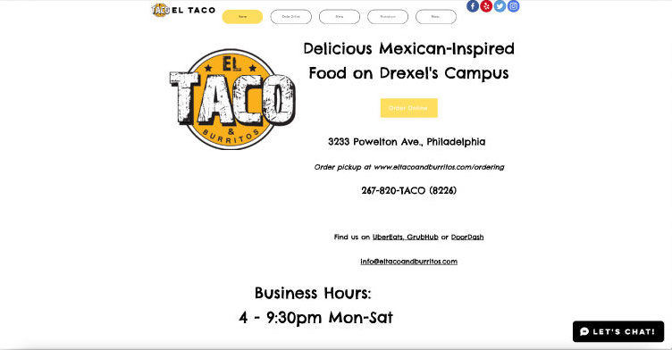
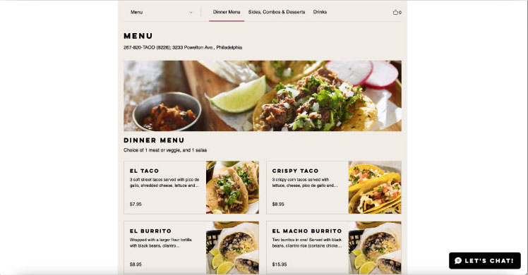
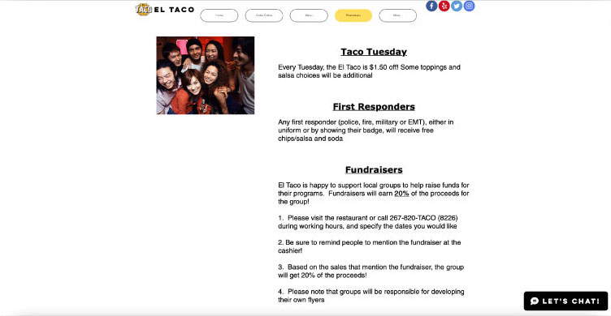
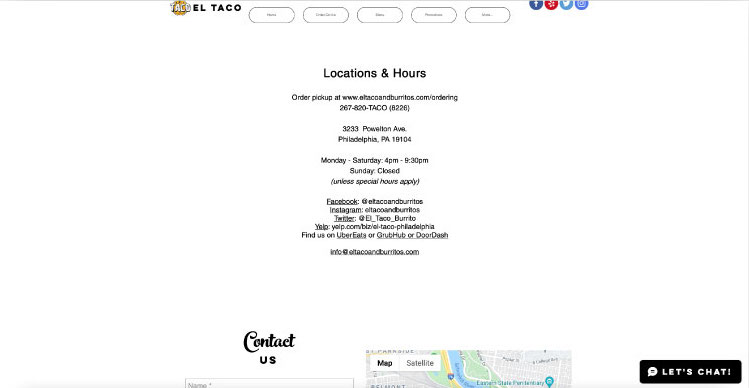
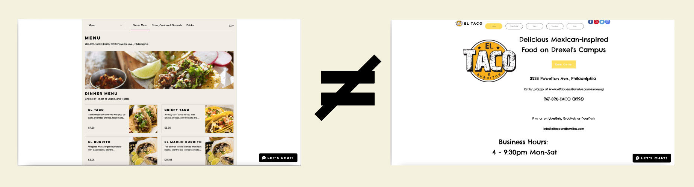
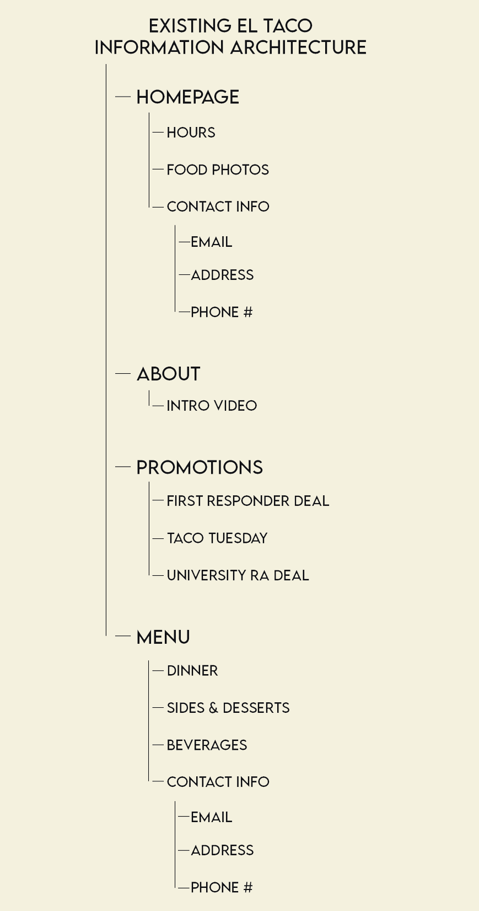

El Taco
For my user interface design class, we were tasked with redesigning an existing website. I chose El Taco because of its great business presence in the community, while it’s current website was lacking visually.
El Taco is a locally owned and operated Mexican-inspired restaurant, serving tacos, burritos, nachos, and other delicious bites in the heart of Drexel University’s Campus in Philadelphia.
Why El Taco?
El Taco plays a large role in the community as a small business and was even chosen by Door Dash to educate and train other minority-run businesses. While their great food has rewarded them with return customers and great reviews online, their website does not reflect all that El Taco offers. For my user interface design class, we were tasked with redesigning an existing website. I chose El Taco because of its great business presence in the community, while it’s current website was visually lacking.
Original Website
El Taco’s existing site consisted of immensely empty space and haphazardly placed content. This site does not represent El Taco’s story and well-deserved reputation for delicious food.
Homepage
Menu
Promotions
Contact
Where Does It Need to Improve?
Consistency
The original El Taco website lacked consistency, as most pages didn’t have the same vital information available in a consistent manner. Without internal consistency in design or content availability, users may be faced with an increased cognitive load. This can lead to frustration and users leaving the site, thus losing potential customers.
For example, the menu page displays a much different color scheme, different typography, and layout compared to the homepage.
Information Architecture
While the site's information architecture is not lacking as much as its visual design and interface, it could use some improvements, such as a unifying header and footer with consistent contact information.